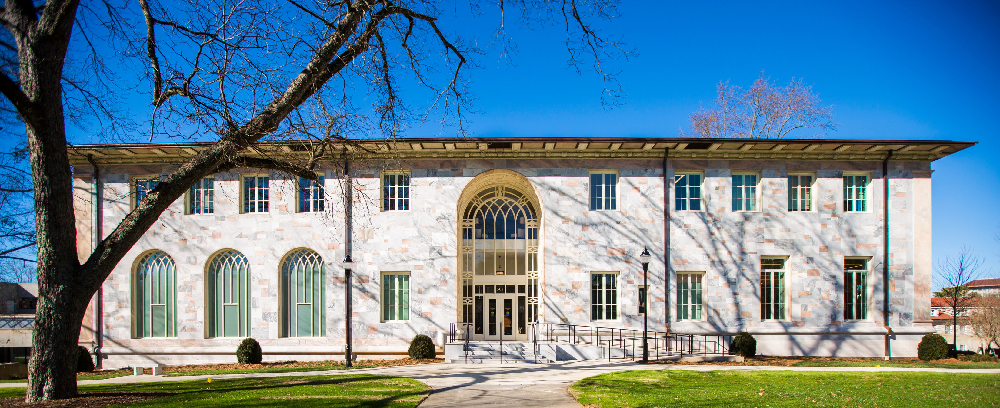

LEED Gold
Convocation Hall | Emory University
Built in 1916, the Theology Building, now called Convocation Hall, has been meticulously restored to become Emory’s hub for administration, the President, and the board of trustees.
This 27,889 square foot building, Emory’s first LEEDv4 project, uses 33% less energy, 25% less indoor water, and 75% less outdoor water than a structure built to code and features advanced energy and water metering.
The building reduced potable water consumption by using the Emory WaterHub, an on-site water recycling system for cooling tower use. RBGB constructed the building’s energy model and led the entire LEED certification process.
RBGB utilized the integrative design process to ensure project success, including several LEED meetings, continuous assessment of requirements, and full engagement from the designers, contractors, third-party providers, and Emory facilities staff.
